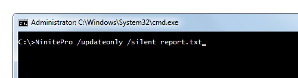

Atualize e Implante Aplicativos Diretamente do Seu Navegador
Você pode gerenciar seus PCs com Windows (Windows 7 e versões posteriores) em uma interface web ao vivo com o Prijasa Pro. Instale o leve Agente Prijasa em suas máquinas e elas aparecem instantaneamente na web para uma gestão simples com cliques. É uma maneira fácil de obter uma visão interativa em tempo real de todas as suas máquinas.
Uma Nova Interface
O novo Prijasa Pro permite que você gerencie seu software em uma interface web ao vivo. Cada máquina é uma linha e cada aplicativo é uma coluna. Você pode selecionar uma célula individual para atualizar, instalar ou desinstalar um aplicativo em uma máquina. Ou selecionar várias células (ou linhas ou colunas inteiras ou tudo) para realizar ações em massa. Você pode até assistir os agentes trabalhando em tempo real.
Notebooks Móveis e Máquinas Offline
O agente recebe comandos e envia atualizações de volta por meio de uma conexão segura com os servidores do Prijasa. Isso significa que um laptop móvel parece e funciona como qualquer outra máquina na interface web. Isso também possibilita emitir comandos de instalação/atualização/desinstalação para máquinas offline e entregá-los na próxima vez que essas máquinas estiverem online.
Cache Simples de Download Economiza Largura de Banda

Você pode marcar algumas de suas máquinas como servidores de cache e fazer com que outras máquinas encaminhem seus downloads por meio delas. Se o servidor de cache já tiver uma cópia dos dados solicitados, ele pode entregá-los diretamente sem precisar de outro download. Isso torna as atualizações mais rápidas e economiza muita largura de banda. É fácil configurar e alterar suas configurações de servidor de cache diretamente na interface web, sem precisar planejar tudo com antecedência.
Políticas de Atualização Automáticas Simples
Por padrão, você pode controlar manualmente os aplicativos na nova interface Pro, mas também pode configurar políticas de atualização automática para aplicar atualizações assim que elas estiverem disponíveis. Você também pode bloquear aplicativos se quiser uma garantia extra de que não serão alterados usando o Prijasa Pro, o que é ótimo se algumas máquinas exigirem uma versão específica do Java, por exemplo.
Classifique, Agrupe e Filtre
Você pode organizar suas máquinas da maneira que desejar, atribuindo uma ou mais tags a elas. Se você é um MSP (provedor de serviços gerenciados), adicionar uma tag por cliente é uma ótima maneira de focar e relatar sobre diferentes clientes. O Prijasa irá automaticamente marcar as máquinas com seu status online/offline ou se estão executando o Windows Server ou Workstation. É fácil filtrar apenas as máquinas que você está interessado.
Veja o Panorama Geral

Você pode obter uma visão geral de alto nível de todas ou algumas de suas máquinas na guia Visão Geral. Veja seu status de patching rapidamente e até atualize tudo (ou vá aplicativo por aplicativo) com um único clique.
Simples de Começar
Assim que você se inscrever ou tiver suas credenciais de teste, pode baixar seu instalador de Agente personalizado. Você pode implantar o agente via um MSI, usando um instalador .exe simples com um switch /silent, ou usando um instalador .exe especial em toda a rede que funciona como o modo remoto do Prijasa Pro Classic. Uma vez que o agente está instalado, você gerencia todo o resto diretamente na web.
Prijasa Pro Classic Incluído
Achamos que esta nova interface é muito mais simples e poderosa, mas o Prijasa Pro Classic ainda tem suas utilidades. Portanto, se você quiser integrar com um RMM ou outra ferramenta, ou se já estiver satisfeito usando o Prijasa em um script de inicialização, tudo bem. O Prijasa Pro Classic ainda será suportado e está incluído em todas as contas do Prijasa Pro. Saiba mais sobre o Prijasa Pro Classic.
Linha de Comando do Pro Classic

Se você não gosta de clicar por aí, ainda pode usar a linha de comando do Prijasa Pro Classic para integrar em outras ferramentas ou scripts também. A linha de comando é extremamente configurável e você pode ler sobre todas as opções em nossa página de ajuda.
Milhares de Clientes Satisfeitos Incluindo

O Prijasa Pro é usado para atualizar e proteger software em milhares de organizações. Faça um teste abaixo e veja como ele pode ajudar a sua!
Preços do Prijasa Pro
O Prijasa Pro é um serviço de assinatura e o preço é baseado na contagem de máquinas. Aqui estão alguns exemplos:
| Máquinas | Preço Total |
|---|---|
| Primeiras 20 máquinas / mês | $1,00 por máquina |
| Próximas 400 máquinas / mês | $0,50 por máquina |
| Máquinas adicionais / mês | $0,25 por máquina |
Vamos calcular o preço para 700 máquinas: (20 * $1,00) + (400 * $0,50) + (280 * $0,25) = $290 / mês. Bem simples!
Respostas para Perguntas Comuns
- Quais aplicativos ele suporta?
- Aqui está a lista completa.
- Posso usar uma conta Prijasa em múltiplos locais e para múltiplos clientes?
- Sim, você pode usar uma conta em múltiplos locais e com múltiplos clientes. Para fins de licenciamento, só nos importamos com o número total de máquinas.
- Posso pagar por transferência bancária, ordem de compra ou cheque?
- Sim, podemos fazer isso para nossos planos anuais pré-pagos. Envie um e-mail para contact@prijasa.com e podemos ajudar.
- Preciso instalar o agente em cada PC?
- Sim, você precisará instalar o agente em cada máquina antes que ela se torne visível na interface. Depois disso, tudo pode ser gerenciado pela web.
- Meus usuários precisam ter direitos de Administrador?
- Não. Usuários normais na verdade nunca interagem com o Prijasa Pro. Você precisará de direitos de Administrador para instalar o agente, no entanto.
- Vocês suportam aplicativos personalizados?
- Atualmente não temos suporte para aplicativos personalizados embutido. É algo que estamos considerando para um novo recurso.
- Todos os meus técnicos/equipe podem usar uma conta Prijasa?
- Sim, uma conta pode ser utilizada por técnicos ilimitados. Para fins de licenciamento, só nos importamos com o número total de máquinas.
- Quais sistemas operacionais e versões são suportados?
- O agente roda em Windows 11, 10, 8.x, 7 e versões equivalentes do servidor.
- E se eu precisar substituir um PC, preciso de mais licenças?
- Basta desinstalar o agente do PC antigo e reinstalá-lo no novo. Você pode desinstalar o agente remotamente na aba Máquinas.
- Posso mudar minha contagem de máquinas depois?
- Sim, basta enviar um e-mail para contact@prijasa.com quando o número de máquinas que você está gerenciando mudar e podemos configurá-lo em um novo plano.
- Minha pergunta não está aqui.
- Pergunte-nos e entraremos em contato. Não se esqueça de deixar seu endereço de e-mail ou não poderemos responder.